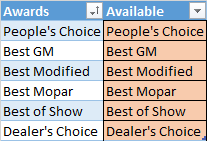
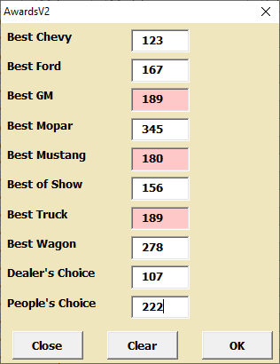

In addition to trophies, many car shows give special awards such as "Best in Show" or "Best Paint". These special awards and their winners are usually selected by the show staff or show sponsors outside of the normal judging process and are excluded from the normal Tally process. Therefore, special award winners should be selected before Tally.
The Awards dialog is created from the Awards table in the hidden Judging sheet. Modify the Awards column in the table as needed for each show. To add a row, begin typing in the row below the "Awards" column. Do not modify the "Available" column entries.

Car Show Helper Awards Table.
There are two ways of assigning awards.
Manually - Click in the Registration sheet Awards column and select the award from the pull-down list. Each award is removed from the pull-down list when it is assigned. To remove an award from a car, select its award cell and press the delete key. Deleted award assignments are returned to the awards pull-down list
Awards Dialog - Show staff or sponsors will usually provide a list of car numbers with awards. Use the Awards Dialog below to assign the special awards without scrolling through the Registration sheet.
Using the Awards Dialog
Previously assigned award car numbers are pre-populated in the Dialog.
Duplicate and invalid car numbers are pink. Remove or correct before voting the ballot
Unassigned award car number fields are blank.
Move/assign/delete an award by editing/deleting the car number. Click Vote
Click Clear to remove all awards from the Dialog and the Registration sheet.
Click Close to close the dialog.

Car Show Helper Awards Dialog. Car 189 is a duplicate, Car 180 is not in the registration sheet.